Nos choix, en toute transparence
Ceci n'est pas un conseil en investissement. Ce que vous voyez ici est le portefeuille personnel de l'équipe Ktiso, partagé à titre pédagogique — pour montrer un raisonnement, pas pour indiquer quoi acheter.
Les performances passées ne préjugent pas des performances futures. Vos objectifs, votre horizon et votre tolérance au risque sont probablement différents des nôtres.
Comme indiqué sur notre page À propos, Ktiso ne vend ni ne recommande de produits financiers.
Comprendre une règle de diversification en théorie est une chose. Voir comment une vraie personne l'applique, avec ses doutes et ses arbitrages, en est une autre. C'est ce que cette page essaie de montrer.
Emplacement réservé — les données réelles remplaceront cette illustration dès que le suivi sera en place.
Sans pourcentages précis pour l'instant — l'idée est de montrer la logique de répartition, qui sera détaillée ici au fur et à mesure.
Le cœur du portefeuille, orienté long terme et diversifié par secteur et zone géographique.
Une poche plus défensive, pour amortir la volatilité de la partie actions.
Une exposition volontairement limitée, à la mesure du risque que représente cette classe d'actifs.
Une réserve de sécurité, indépendante du reste du portefeuille.
Ce que ça change concrètement de ne pas tout miser sur un seul marché, et comment nous avons réfléchi cette répartition.
La règle simple qu'on s'est fixée pour ne jamais laisser une classe d'actifs volatile peser trop lourd.
Ce qui nous fait revoir une position — et ce qui, la plupart du temps, ne le justifie pas.
Ces analyses sont des exemples de mise en page, en attente des vraies publications de l'équipe.